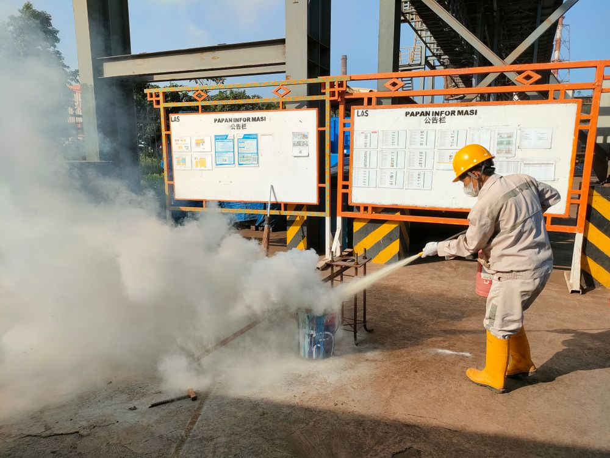

LISTENING
8. Look at the picture and answer the questions.

Where are these people, and what are their jobs?
What is the man in the vest pointing at, and why?
Predict: what topics will this talk cover?
9. Listen to the safety briefing and complete the sentences with ONE word or a number.
Scan to listen on your phone
The fire extinguisher is on the wall next to the luggage
.
The emergency folder is
and is kept under the printer.
The assembly point is in the rose
, twenty metres from the main entrance.
If a guest is injured, Lina will call an ambulance on
.
The hotel holds a fire drill on the first
of every month.
10. Listen again. Number the evacuation steps (a–e) in the order Karim gives them (1–5).
Count every guest at the assembly point.
Stay calm.
Lead the guests down the stairs.
Pick up the red emergency folder.
Take the guest list with you.
← Previous
Contents
Next →
113